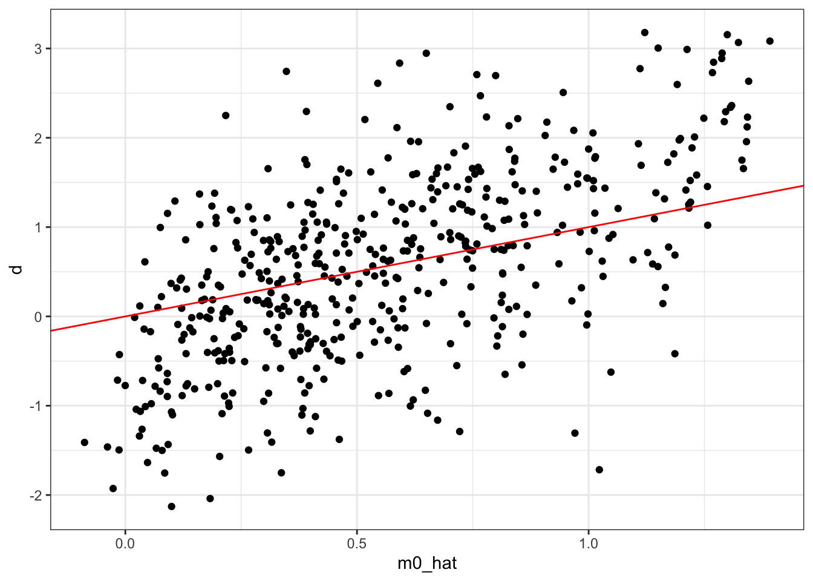
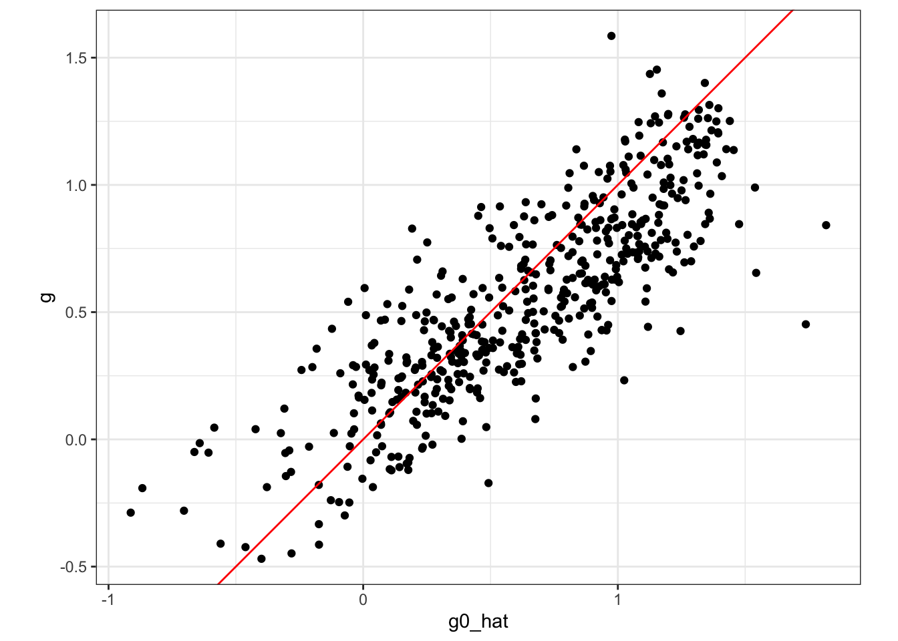
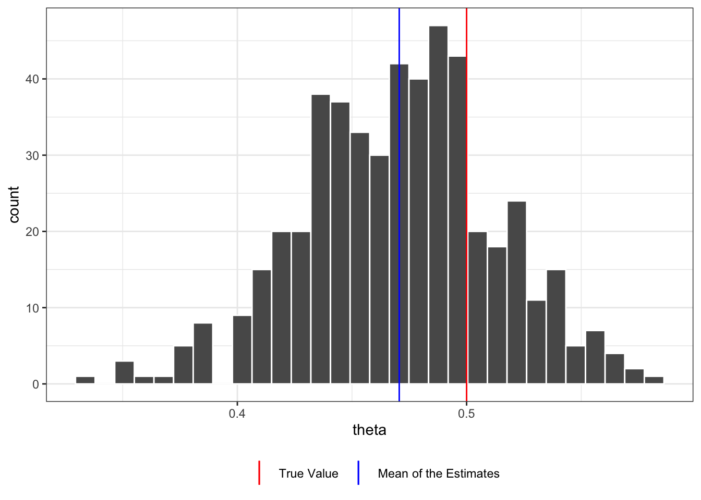
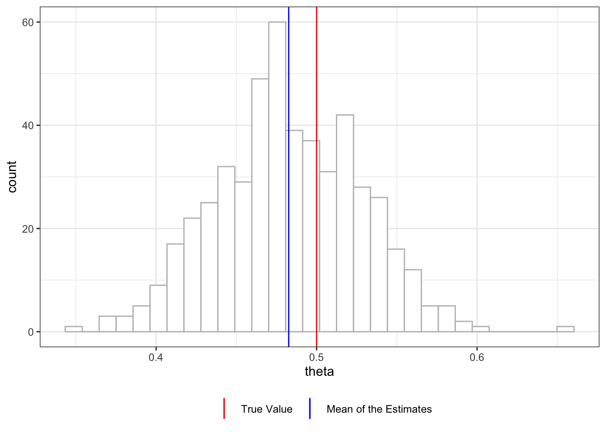
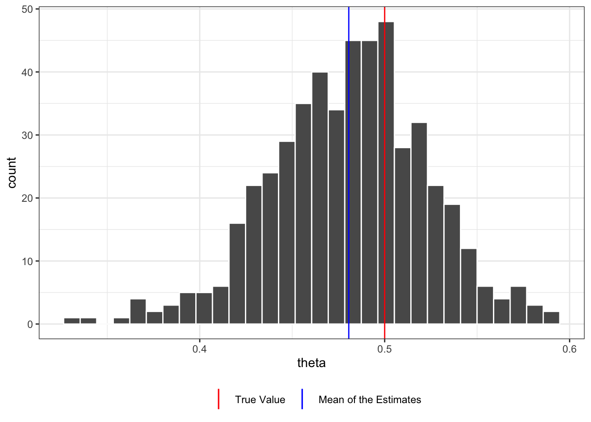
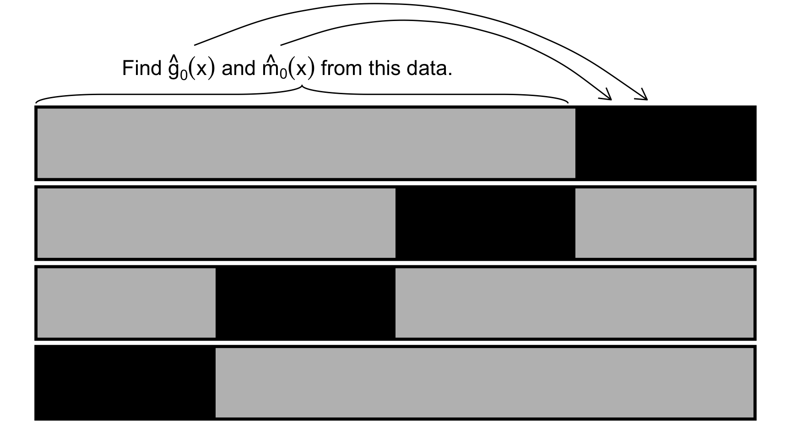
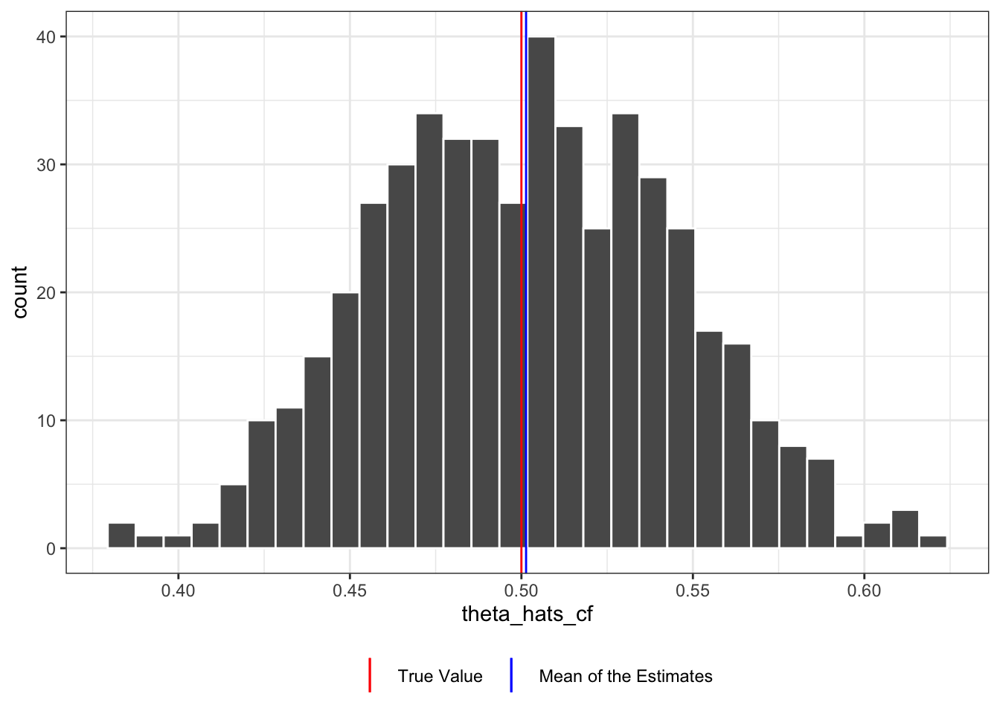

library(data.table)
library(magick)
library(fixest)
library(DoubleML)
library(tidyverse)
library(mlr3)
library(parallel)
library(mlr3learners)
library(ggbrace)
library(rsample)
library(MASS)
library(ranger)9 Double Machine Learning
The most important ideas of the recent development of causal machine learning (CML) methods originate from Chernozhukov et al. (2018), which proposed Double/Debiased ML methods. In this section, we go over those key ideas that are the heart of many other important CML methods we will learn later.
9.1 Problem Setting
We are interested in the estimating the following econometric model
We follow the notations of Chernozhukov et al. (2018).
\[ \begin{aligned} y = \theta d + g_0(X) + \mu \\ T = m_0(X) + \eta \end{aligned} \]
Your sole interest is in estimating \(\theta\): the impact of the treatment (\(d\)). \(g_0(X)\) is the impact of a collection of variables \(X\). \(m_0(X)\) expresses how \(X\) affects the treatment status, \(d\). \(d\) may be binary or continuous. The key assumptions here are \(E[\mu|X]\) and \(E[\eta|X]\)……. That is…
Note that the treatment effect is assumed to be constant irrespective of the value of \(X\). So, the treatment effect is not heterogeneous. We will cover heterogeneous treatment effect estimation later.
Tip
\(g_0(X)\) and \(m_0(X)\) are called nuisance functions because we are not interested in understanding them. We are only interested in controlling for them to estimate \(\theta\) accurately.
9.2 A naive approach and regularization bias
Packages to load for replication
One way to estimate \(\theta\) follows the following steps:
- Step 1: Estimate \(g_0(X)\) and then subtract the fitted value of \(g_0(X)\) from \(y\).
- Step 1.1: Regress \(y\) on \(X\) to estimate \(E[y|X]\) and call it \(\hat{l}_0(x)\)
- Step 1.2: Regress \(d\) on \(X\) to estimate \(E[d|X]\) (\(m_0(X)\)), call it \(\hat{m}_0(x)\), and calculate \(\tilde{d} = d - \hat{m}_0(X)\).
- Step 1.3: Get an initial estimate of \(\theta\) using \[ \begin{aligned} \hat{\theta}_{init} = (\frac{1}{n}\sum_{i=1}^N \tilde{d}_i \tilde{d}_i)^{-1}\frac{1}{n}\sum_{i=1}^N \tilde{d}_i (y_i - \hat{l}_0(X_i)) \end{aligned} \tag{9.1}\]
- Step 1.4: Regress \(y_i - \hat{\theta}_{init}d\) on \(X\) to estimate \(g_0(X)\) and call it \(\hat{g}_0(X)\).
- Step 2: Regress \(y - \hat{g}_0(X)\) on \(d\). Or equivalently, use the following formula \[ \begin{aligned} \hat{\theta} = (\frac{1}{n}\sum_{i=1}^N d_i d_i)^{-1}\frac{1}{n}\sum_{i=1}^N d_i (y_i - \hat{g}_0(X_i)) \end{aligned} \tag{9.2}\]
As it will turn out, this procedure suffers from the so-called regularization and over-fitting bias(Chernozhukov et al. 2018).
To demonstrate the bias problem, we work on the following data generating process used in the user guide for the DoubleML package.
\[ \begin{aligned} y_i = 0.5 d_i + x_{i,1} + \frac{1}{4}\cdot\frac{exp(x_{i,3})}{1 + exp(x_{i,3})} + \mu_i \\ d_i = \frac{exp(x_{i,1})}{1 + exp(x_{i,1})} + \frac{1}{4}\cdot x_{i,3}+ \eta_i \end{aligned} \]
where \(\mu_i \sim N(0, 1)\) and \(\eta_i \sim N(0, 1)\) (So, no endogeneity problem). In this data generating process, \(d\) is not binary and its effect on \(y\) is assumed to be linear.
We use the gen_data() function (defined on the right), which is a slightly generalized version of the make_plr_CCDDHNR2018() function from the DoubleML package.
gen_data() allows you to specify \(g_0(X)\) and \(m_0(X)\) unlike make_plr_CCDDHNR2018().
gen_data <- function(
g_formula = formula(~ I(exp(x1)/(1+exp(x1))) + I(x3/4)), # formula that defines g(x)
m_formula = formula(~ x1 + I(exp(x3)/(1+exp(x3))/4)), # formula that defines m(x)
te_formula = formula(~ I(0.5*d)), # formula that defines theta(x) * t
n_obs = 500,
n_vars = 20,
mu_x = 0,
vcov_x = NULL,
sigma = 1 # sd of the error term in the y equation
)
{
if (is.null(vcov_x)) {
vcov_x <- matrix(rep(0, n_vars^2), nrow = n_vars)
for (i in seq_len(n_vars)) {
vcov_x[i, ] <- 0.7^abs(i - seq_len(n_vars))
}
}
#=== draw from multivariate normal ===#
data <-
mvrnorm(n_obs, mu = rep(0, n_vars), Sigma = vcov_x) %>%
data.table() %>%
setnames(names(.), paste0("x", 1:n_vars))
#=== generate d ===#
if (m_formula == "independent") {
data[, d := rnorm(n_obs)]
} else {
data[, d := model.frame(m_formula, data = data) %>% rowSums() + rnorm(n_obs)]
}
#=== generate y ===#
data[, g := model.frame(g_formula, data = data) %>% rowSums()]
#=== generate treatment effect ===#
data[, te := model.frame(te_formula, data = data) %>% rowSums()]
#=== generate y ===#
data[, y := te + g + rnorm(n_obs, sd = sigma)]
return(data[])
}set.seed(2893434)
training_data <- gen_data()It has 20 x variables (for \(X\)) along with d (treatment) and y (dependent variable). Only x1 and x3 are the relevant variables and the rest of \(X\) are irrelevant.
str(training_data)Classes 'data.table' and 'data.frame': 500 obs. of 24 variables:
$ x1 : num 0.867 0.435 -0.454 0.282 0.361 ...
$ x2 : num 0.338 1.197 0.461 0.977 0.111 ...
$ x3 : num 0.302 1.872 -0.202 1.189 0.584 ...
$ x4 : num 0.7643 0.93275 -0.08757 0.44677 0.00945 ...
$ x5 : num 0.641 1.793 0.294 0.257 0.54 ...
$ x6 : num 0.403 1.028 1.272 -0.104 -0.327 ...
$ x7 : num 0.335 2.096 0.631 0.428 -1.161 ...
$ x8 : num -0.732 3.224 0.81 1.915 -1.882 ...
$ x9 : num -1.172 2.838 0.186 2.378 -1.156 ...
$ x10: num -1.216 3.058 -1.299 1.938 -0.075 ...
$ x11: num -0.8736 1.2757 -1.2655 2.0184 -0.0257 ...
$ x12: num 0.841 -0.294 -0.537 1.463 -0.547 ...
$ x13: num 0.805 -0.335 -0.834 1.875 -0.82 ...
$ x14: num 0.336 0.851 -0.903 1.648 -1.375 ...
$ x15: num -0.175 -1.104 -0.196 1.174 -1.435 ...
$ x16: num -1.3271 -0.6673 -0.1669 0.0313 -0.8977 ...
$ x17: num -0.518 -0.49 -0.755 0.226 0.248 ...
$ x18: num 0.335 -0.592 -0.433 0.486 -0.446 ...
$ x19: num 0.839 -1.647 -1.352 -0.152 -0.446 ...
$ x20: num -0.0674 -2.1706 -2.148 -0.8532 -0.5553 ...
$ d : num 1.242 -0.103 -0.227 1.69 1.047 ...
$ g : num 0.78 1.075 0.338 0.867 0.735 ...
$ te : num 0.621 -0.0513 -0.1135 0.8449 0.5234 ...
$ y : num 3.215 0.027 -0.669 3.583 1.922 ...
- attr(*, ".internal.selfref")=<externalptr> 9.2.1 Step 1
Let’s now work on Step 1. We estimate \(g_0(X)\) using random forest (RF). As described above, this is a four-step process.
It does not have to be RF. Indeed, you can use any statistical methods in this step.
Step 1.1: Estimate \(l_0(X)\) by regressing \(y\) on \(X\).
#--------------------------
# Step 1.1
#--------------------------
rf_fitted_l0 <-
ranger(
y ~ .,
data = dplyr::select(training_data, c("y", starts_with("x"))),
mtry = 5,
num.trees = 132,
max.depth = 5,
min.node.size = 1
)
#=== fitted values ===#
l0_hat <- predict(rf_fitted_l0, data = training_data)$predictions
#=== create y - l0_hat ===#
training_data[, y_less_l := y - l0_hat]Step 1.2: Estimate \(m_0(X)\) by regressing \(d\) on \(X\).
#--------------------------
# Step 1.2
#--------------------------
rf_fitted_m0 <-
ranger(
d ~ .,
data = dplyr::select(training_data, c("d", starts_with("x"))),
mtry = 5,
num.trees = 378,
max.depth = 3,
min.node.size = 6
)
#=== fitted values ===#
m0_hat <- predict(rf_fitted_m0, data = training_data)$predictions
#=== create y - m0_hat ===#
training_data[, d_less_m := d - m0_hat]Figure of d (treatment variable) plotted against m0_hat (\(\hat{m}_0(X)\)).
Code
ggplot(training_data) +
geom_point(aes(y = d, x = m0_hat)) +
geom_abline(slope = 1, color = "red") +
theme_bw()
Step 1.3: Get an initial estimate of \(\theta\) using Equation 9.1.
#--------------------------
# Step 1.2
#--------------------------
theta_init <- training_data[, sum(d_less_m * y_less_l) / sum(d_less_m * d_less_m) ]Step 1.4: Regress \(y - \theta_{init}d\) on \(X\) to fit \(g_0(X)\).
#--------------------------
# Step 1.3
#--------------------------
#=== define y - treatment effect ===#
training_data[, y_less_te := y - theta_init * d]
#=== fit rf ===#
rf_fitted_g0 <-
ranger(
y_less_te ~ .,
data = dplyr::select(training_data, c("y_less_te", starts_with("x"))),
mtry = 5,
num.trees = 132,
max.depth = 5,
min.node.size = 1
)
#=== fitted values ===#
g0_hat <- predict(rf_fitted_g0, data = training_data)$predictions
#=== create y - g0 ===#
training_data[, y_less_g := y - g0_hat]Figure 9.1 plots true \(g_0(X)\) (g) against \(\hat{g}_0(X)\) (g0_hat). As you can see, \(\hat{g}_0(X)\) is a bit biased.
Code
ggplot(training_data) +
geom_point(aes(y = g, x = g0_hat)) +
geom_abline(slope = 1, color = "red") +
theme_bw() +
coord_equal()
9.2.2 Step 2
Finally, we regress \(y - \hat{g}_0(X)\) on \(d\) (or equivalently using Equation 9.2).
(
theta_hat <- lm(y_less_g ~ d, data = training_data)$coefficient["d"]
) d
0.4944072 So, in this instance, we get an estimate of \(\theta\) that is a bit lower than the true value of \(\theta\). Let’s repeat this process many times to see how this procedure performs on average.
Code
fit_m0 <- function(training_data, mtry = 10) {
rf_fitted_m0 <-
ranger(
d ~ .,
data = dplyr::select(training_data, c("d", starts_with("x"))),
# mtry = 5,
mtry = mtry,
# num.trees = 378,
num.trees = 500,
max.depth = 3,
# min.node.size = 6
min.node.size = 10
)
return(rf_fitted_m0)
}
fit_l0 <- function(training_data, mtry = 12)
{
rf_fitted_l0 <-
ranger(
y ~ .,
data = dplyr::select(training_data, c("y", starts_with("x"))),
mtry = mtry,
# num.trees = 132,
num.trees = 500,
max.depth = 5,
# min.node.size = 1
min.node.size = 10
)
return(rf_fitted_l0)
}
#===================================
# Define a function that will get you g0_hat
#===================================
# this function will be used later
fit_g0 <- function(training_data, rf_fitted_m0, mtry_l = 12, mtry_g = 12) {
#--------------------------
# Step 1.1
#--------------------------
rf_fitted_l0 <- fit_l0(training_data, mtry_l)
#=== fitted values ===#
l0_hat <- predict(rf_fitted_l0, data = training_data)$predictions
#=== create y - l0_hat ===#
training_data[, y_less_l := y - l0_hat]
#--------------------------
# Step 1.2
#--------------------------
#=== fitted values ===#
m0_hat <- predict(rf_fitted_m0, data = training_data)$predictions
#=== create y - m0_hat ===#
training_data[, d_less_m := d - m0_hat]
#--------------------------
# Step 1.2
#--------------------------
theta_init <- training_data[, sum(d_less_m * y_less_l) / sum(d_less_m * d_less_m)]
#--------------------------
# Step 1.3
#--------------------------
#=== define y - treatment effect ===#
training_data[, y_less_te := y - theta_init * d]
#=== fit rf ===#
rf_fitted_g0 <-
ranger(
y_less_te ~ .,
data = dplyr::select(training_data, c("y_less_te", starts_with("x"))),
mtry = mtry_g,
# num.trees = 132,
num.trees = 500,
max.depth = 5,
# min.node.size = 1
min.node.size = 10
)
return(rf_fitted_g0)
}
#===================================
# Define a function that runs a single simulation and gets you theta_hat
#===================================
run_sim_naive <- function(i){
# training_data <- data[[i]] %>% data.table()
training_data <- gen_data()
rf_fitted_m0 <- fit_m0(training_data)
rf_fitted_g0 <- fit_g0(training_data, rf_fitted_m0)
g0_hat <- predict(rf_fitted_g0, data = training_data)$predictions
#=== create y - g0 ===#
training_data[, y_less_g := y - g0_hat]
theta_hat <- lm(y_less_g ~ d, data = training_data)$coefficient["d"]
# theta_hat <- training_data[, sum(d * y_less_g) / sum(d * d)]
return(theta_hat)
}
#===================================
# Repeat MC simulations 500 times
#===================================
theta_hats_apr1 <-
mclapply(
1:500,
run_sim_naive,
mc.cores = detectCores() / 4 * 3
) %>%
unlist() %>%
data.table(theta = .)
#===================================
# Plot the results
#===================================
ggplot(theta_hats_apr1) +
geom_histogram(aes(x = theta), color = "white") +
theme_bw() +
geom_vline(aes(xintercept = 0.5,color = "True Value")) +
geom_vline(aes(xintercept = theta_hats_apr1[, mean(theta)], color = "Mean of the Estimates")) +
scale_color_manual(
values = c("True Value" = "red", "Mean of the Estimates" = "blue"),
name = ""
) +
guides(color = guide_legend(nrow = 1, byrow = TRUE)) +
theme(legend.position = "bottom")
Figure 9.2 shows the histogram of \(\hat{\theta}\) from 500 simulations. You can see that this procedure has led to consistent underestimation of the treatment effect. There are two sources of bias in this approach: regularization and over-fitting bias.
Note
- Regularization bias: the bias coming from bias in estimating \(g_0(X)\)
- Over-fitting bias: the bias coming from over-fitting \(g_0(X)\) and \(m_0(X)\) due to the fact that the same sample is used for \(g_0(X)\) and \(m_0(X)\) estimation and \(\theta\) estimation
Regularization bias is termed so because bias in estimating \(g_0(X)\) can occur when some form of regularization is implemented (e.g., lasso). However, its name is slightly misleading because \(g_0(X)\) cannot be estimated without bias even without any regularization in general. This is because the estimation of initial \(\theta\) (in Step 1.3) is biased, which comes from the fact that \(m_0(X)\) is correlated with \(g_0(X)\) through \(X\).
Another (unofficial) implementation of \(g_0(X)\) estimation is to just use \(\hat{l}_0(X_i)\) as \(\hat{g}_0(X_i)\) (a blog post) and then use the following formula.
\[ \begin{aligned} \hat{\theta} = (\frac{1}{n}\sum_{i=1}^N d_i d_i)^{-1}\frac{1}{n}\sum_{i=1}^N d_i (y_i - \hat{l}_0(X_i)) \end{aligned} \]
\(\hat{\theta}\) is biased because \(\hat{l}_0(X_i)\) is a biased estimator of \(\hat{g}_0(X_i)\) when \(m_0(X)\) and \(g_0(X)\) are correlated. The point here is that, \(g_0(X)\) is hard to estimate without bias irrespective of whether any regularization happens or not.
However, if the treatment is independent, then, \(g_0(X)\) can be estimated well and this approach works well except it still suffers from over-fitting bias. Figure 9.3 shows that the distribution of \(\hat{\theta}\) when \(m_0(X)\) is independent of \(g_0(X)\) and the RF with the same hyper-parameters are used. While regularization can lead to bias in the estimation of \(g_0(X)\), regularization is not the only source of bias.
Code
run_sim_naive <- function(i){
training_data <- gen_data(m_formula = "independent")
rf_fitted_m0 <- fit_m0(training_data)
rf_fitted_g0 <- fit_g0(training_data, rf_fitted_m0)
# rf_fitted_g0 <- fit_l0(training_data)
g0_hat <- predict(rf_fitted_g0, data = training_data)$predictions
#=== create y - g0 ===#
training_data[, y_less_g := y - g0_hat]
theta_hat <- lm(y_less_g ~ d, data = training_data)$coefficient["d"]
# theta_hat <- training_data[, sum(d * y_less_g) / sum(d * d)]
return(theta_hat)
}
#===================================
# Repeat MC simulations 500 times
#===================================
theta_hats_apr1_indep <-
mclapply(
1:500,
run_sim_naive,
mc.cores = detectCores() / 4 * 3
) %>%
unlist() %>%
data.table(theta = .)
#===================================
# Plot the results
#===================================
ggplot(theta_hats_apr1_indep) +
geom_histogram(aes(x = theta), color = "white") +
theme_bw() +
geom_vline(aes(xintercept = 0.5,color = "True Value")) +
geom_vline(aes(xintercept = theta_hats_apr1_indep[, mean(theta)], color = "Mean of the Estimates")) +
scale_color_manual(
values = c("True Value" = "red", "Mean of the Estimates" = "blue"),
name = ""
) +
guides(color = guide_legend(nrow = 1, byrow = TRUE)) +
theme(legend.position = "bottom")
9.3 Overcoming the regularization bias
Regularization bias can be overcome by double-debiasing (orthogonalizing both \(d\) and \(y\)). Specifically,
- Step 1: Estimate \(g_0(X)\) and then subtract the fitted value of \(g_0(X)\) from \(y\)
- Step 2: Subtract \(\hat{m}_0(X)\) from \(d\) (\(\tilde{d} = d - \hat{m}_0(x)\))
- Step 3: Calculate \(\hat{\theta}\) based on the following formula
\[ \begin{aligned} \hat{\theta} = (\frac{1}{n}\sum_{i=1}^N \tilde{d}_i d_i)^{-1}\frac{1}{n}\sum_{i=1}^N \tilde{d}_i (y_i - \hat{g}_0(X_i)) \end{aligned} \]
The key difference from the previous approach is that this approach uses IV-like formula, where \(\tilde{d}\) is acting like an instrument.
For \(y = X\beta + \mu\) with instruments \(Z\), the IV estimator is
\[ \begin{aligned} \hat{\beta} = (Z'X)^{-1}Z'y \end{aligned} \]
We have done Steps 1 and 2 already in the previous approach. So,
#--------------------------
# Step 3
#--------------------------
(
theta_hat <- training_data[, sum(d_less_m * y_less_g) / sum(d_less_m * d)]
)[1] 0.4933098Now, let’s repeat this 500 times.
Code
run_sim_dereg <- function(i)
{
training_data <- gen_data()
# training_data <- data[[i]] %>% data.table
rf_fitted_m0 <- fit_m0(training_data)
m0_hat <- predict(rf_fitted_m0, data = training_data)$predictions
#=== create d - m0_hat ===#
training_data[, d_less_m := d - m0_hat]
#=== get g0_hat ===#
rf_fitted_g0 <- fit_g0(training_data, rf_fitted_m0)
g0_hat <- predict(rf_fitted_g0, data = training_data)$predictions
#=== create y - g0 ===#
training_data[, y_less_g := y - g0_hat]
theta_hat <- training_data[, sum(d_less_m * y_less_g) / sum(d_less_m * d)]
return(theta_hat)
}
theta_hats_apr2 <-
mclapply(
1:500,
function(x) run_sim_dereg(x),
mc.cores = detectCores() / 4 * 3
) %>%
unlist() %>%
data.table(theta = .)
ggplot(theta_hats_apr2) +
geom_histogram(aes(x = theta), color = "white") +
theme_bw() +
geom_vline(aes(xintercept = 0.5,color = "True Value")) +
geom_vline(aes(xintercept = theta_hats_apr2[, mean(theta)], color = "Mean of the Estimates")) +
scale_color_manual(
values = c("True Value" = "red", "Mean of the Estimates" = "blue"),
name = ""
) +
guides(color = guide_legend(nrow = 1, byrow = TRUE)) +
theme(legend.position = "bottom")
Figure 9.4 shows the distribution of \(\hat{\theta}\), which is centered about \(0.48\). The current approach still suffers from the so-called over-fitting bias(Chernozhukov et al. 2018). Let’s look at how we can overcome this bias next.
9.4 Overcoming the over-fitting bias
Over-fitting bias can be overcome by cross-fitting. First, the training data is split into \(K\)-folds just like K-fold cross-validation. Let’s denote them as \(I_1, \dots, I_k\). For example, for \(I_1\), the following steps are taken (Figure 9.5 provides a visual illustration):
- Step 1: Estimate \(\hat{g}_0(x)\) and \(\hat{m}_0(x)\) using the data from the other folds (\(I_2, \dots, I_K\)).
- Step 2: Estimate \(\hat{g}_0(x_i)\) and \(\hat{m}_0(x_i)\) for each \(i \in I_1\) and calculate \(\tilde{y}_i = y_i - \hat{g}_0(x_i)\) and \(\tilde{d}_i = d_i - \hat{m}_0(x_i)\).
- Step 3: Use the following formula to obtain \(\hat{\theta}\).
\[ \begin{aligned} \hat{\theta} = (\frac{1}{n}\sum_{i=1}^N \tilde{d}_i d_i)^{-1}\frac{1}{n}\sum_{i=1}^N \tilde{d}_i (y_i - \hat{g}_0(X_i)) \end{aligned} \tag{9.3}\]
This process is repeated for all the \(K\) folds, and then the the final estimate of \(\hat{\theta}\) is obtained as the average of \(\hat{\theta}\)s.
You can implement repeated K-fold cross-fitting using the DoublML package, which is not demonstrated here as it is very much similar in concept to repeated K-fold CV explained in Chapter 3.
Code
ggplot() +
#=== fold 1 ===#
geom_rect(
aes(xmin = 0, xmax = 10, ymin = 0, ymax = 2),
fill = "grey",
color = "black",
size = 1.2
) +
geom_rect(
aes(xmin = 0, xmax = 2.5, ymin = 0, ymax = 2),
fill = "black"
) +
#=== fold 2 ===#
geom_rect(
aes(xmin = 0, xmax = 10, ymin = 2.2, ymax = 4.2),
fill = "grey",
color = "black",
size = 1.2
) +
geom_rect(
aes(xmin = 2.5, xmax = 5, ymin = 2.2, ymax = 4.2),
fill = "black"
) +
#=== fold 3 ===#
geom_rect(
aes(xmin = 0, xmax = 10, ymin = 4.4, ymax = 6.4),
fill = "grey",
color = "black",
size = 1.2
) +
geom_rect(
aes(xmin = 5, xmax = 7.5, ymin = 4.4, ymax = 6.4),
fill = "black"
) +
#=== fold 4 ===#
geom_rect(
aes(xmin = 0, xmax = 10, ymin = 6.6, ymax = 8.6),
fill = "grey",
color = "black",
size = 1.2
) +
geom_rect(
aes(xmin = 7.5, xmax = 10, ymin = 6.6, ymax = 8.6),
fill = "black"
) +
geom_brace(aes(c(0, 7.4), c(8.7, 9.2)), inherit.data=F) +
annotate(
"text", x = 3.5, y = 9.7, parse = TRUE,
label = "'Find ' * hat(g)[0](x) * ' and ' * hat(m)[0](x) * ' from this data.'",
size = 6
) +
geom_curve(
aes(x = 2.2, xend = 8.5, y = 10.3, yend = 8.8),
arrow = arrow(length = unit(0.03, "npc")),
curvature = -0.3
) +
geom_curve(
aes(x = 3.4, xend = 8, y = 10.3, yend = 8.8),
arrow = arrow(length = unit(0.03, "npc")),
curvature = -0.3
) +
ylim(NA, 11) +
# coord_equal() +
theme_void()
Let’s code the cross-fitting procedure. We first split the data into 2 folds (\(K = 2\)).
\(K\) does not have to be 2.
(
data_folds <- rsample::vfold_cv(training_data, v = 2)
)# 2-fold cross-validation
# A tibble: 2 × 2
splits id
<list> <chr>
1 <split [250/250]> Fold1
2 <split [250/250]> Fold2Let’s cross-fit for fold 1.
split_1 <- data_folds[1, ]
#=== data for estimating g_0 and m_0 ===#
data_train <- analysis(split_1$splits[[1]])
#=== data for which g_0(x_i) and m_0(x_i) are calculated ===#
data_target <- assessment(split_1$splits[[1]]) First, we fit \(\hat{g}_0(x)\) and \(\hat{m}_0(x)\) using the data from the other folds.
#=== m0 ===#
m_rf_fit <- fit_m0(data_train)
#=== g0 ===#
g_rf_fit <- fit_g0(data_train, m_rf_fit)Next, we predict \(\hat{g}_0(x_i)\) and \(\hat{m}_0(x_i)\) for each \(i\) of fold 1 (the target dataset) and calculate \(\tilde{y}_i = y_i - \hat{g}_0(x_i)\) and \(\tilde{d}_i = d_i - \hat{m}_0(x_i)\).
data_orth <-
data_target %>%
#=== prediction of g_0(x_i) ===#
.[, g_0_hat := predict(g_rf_fit, data = .)$predictions] %>%
#=== orthogonalize y ===#
.[, y_tilde := y - g_0_hat] %>%
#=== prediction of m_0(x_i) ===#
.[, m_0_hat := predict(m_rf_fit, data = .)$predictions] %>%
#=== orthogonalize d ===#
.[, d_tilde := d - m_0_hat]Then, \(\hat{\theta}\) is obtained for this fold using Equation 9.3.
(
theta_hat <- data_orth[, sum(d_tilde * y_tilde) / sum(d_tilde * d)]
)[1] 0.5172923We can repeat this for all the folds (cross_fit() which finds \(\hat{\theta}\) for a particular fold is defined on the side).
cross_fit <- function(i, data_folds, mtry_l = 12, mtry_m = 10, mtry_g = 12)
{
#--------------------------
# Prepare data
#--------------------------
#=== ith split ===#
working_split <- data_folds[i, ]
#=== data for estimating g_0 and m_0 ===#
data_train <- analysis(working_split$splits[[1]])
#=== data for which g_0(x_i) and m_0(x_i) are calculated ===#
data_target <- assessment(working_split$splits[[1]])
#--------------------------
# Fit g0 and m0
#--------------------------
#=== m0 ===#
m_rf_fit <- fit_m0(data_train, mtry_m)
#=== g0 ===#
g_rf_fit <- fit_g0(data_train, m_rf_fit, mtry_l, mtry_g)
#--------------------------
# Get y_tilde and d_tilde
#--------------------------
data_orth <-
data_target %>%
#=== prediction of g_0(x_i) ===#
.[, g_0_hat := predict(g_rf_fit, data = .)$predictions] %>%
#=== orthogonalize y ===#
.[, y_tilde := y - g_0_hat] %>%
#=== prediction of m_0(x_i) ===#
.[, m_0_hat := predict(m_rf_fit, data = .)$predictions] %>%
#=== orthogonalize d ===#
.[, d_tilde := d - m_0_hat] %>%
.[, .(y_tilde, d_tilde, d)]
theta_cf <- data_orth[, sum(d_tilde * y_tilde) / sum(d_tilde * d)]
return(theta_cf)
}(
theta_hat <-
lapply(
seq_len(nrow(data_folds)), # loop over folds
function(x) cross_fit(x, data_folds) # get theta_hat
) %>%
unlist() %>%
mean() # average them
)[1] 0.5055226Okay, now that we understand the steps of this approach, let’s repeat this many times (get_theta_cf() that finds \(\hat{\theta}\) by cross-fitting is defined on the side).
get_theta_cf <- function(data_folds, mtry_l = 12, mtry_m = 10, mtry_g = 12){
theta_hat <-
lapply(
seq_len(nrow(data_folds)),
function(x) cross_fit(x, data_folds, mtry_l, mtry_m, mtry_g)
) %>%
unlist() %>%
mean()
return(theta_hat)
}Code
theta_hats_cf <-
mclapply(
1:500,
function(x) {
print(x)
training_data <- gen_data()
data_folds <- rsample::vfold_cv(training_data, v = 2)
theta_hat <- get_theta_cf(data_folds)
return(theta_hat)
},
mc.cores = detectCores() * 3 / 4
) %>%
unlist()
#=== visualize the results ===#
ggplot() +
geom_histogram(aes(x = theta_hats_cf), color = "white") +
theme_bw() +
geom_vline(aes(xintercept = 0.5,color = "True Value")) +
geom_vline(aes(xintercept = mean(theta_hats_cf), color = "Mean of the Estimates")) +
scale_color_manual(
values = c("True Value" = "red", "Mean of the Estimates" = "blue"),
name = ""
) +
guides(color = guide_legend(nrow = 1, byrow = TRUE)) +
theme(legend.position = "bottom")
Figure 9.6 shows the distribution of \(\hat{\theta}\) with double-deabiasing and cross-fitting. It is slightly biased in this instance (mean is 0.502), but the average \(\hat{\theta}\) is very close to the true parameter.
Important
Double-debiasing (double orthogonalization) can help overcome the bias in \(\hat{\theta}\) that comes from the bias in estimating \(g_0(X)\).
Cross-fitting can help overcome the bias from estimating all of \(g_0(X)\), \(m_0(X)\), and \(\theta\) using the same data.
9.5 Implementation
Chernozhukov, Victor, Denis Chetverikov, Mert Demirer, Esther Duflo, Christian Hansen, Whitney Newey, and James Robins. 2018. “Double/debiased machine learning for treatment and structural parameters.” The Econometrics Journal 21 (1): C1–68. https://doi.org/10.1111/ectj.12097.